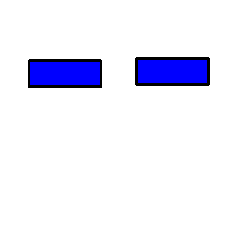

APS Style Property Edge Visibility Test Page
Source image
Reference image before style changes

Test results
Test
Purpose
Test Result
Comments
Set APS Edge Visibility
NA
Passed if edge visibility of right rectangle turns off
Get APS Edge Visibility
NA
Passed if test result is off.